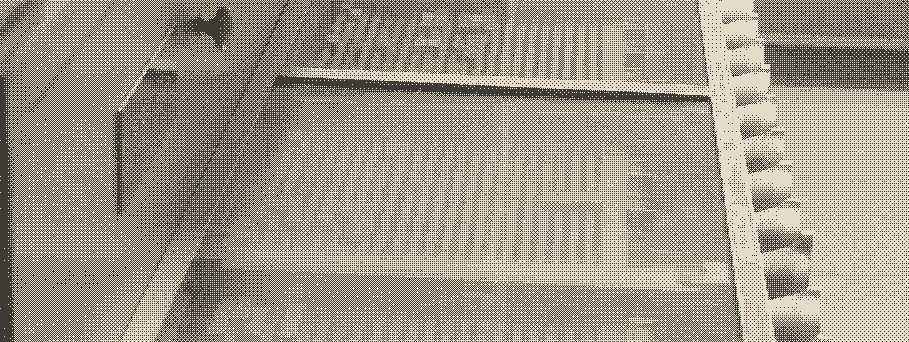
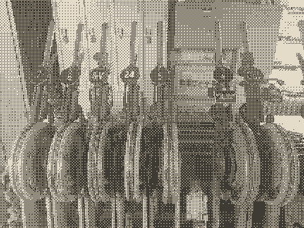
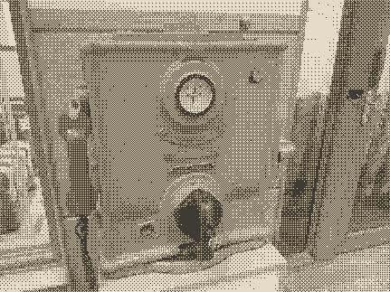
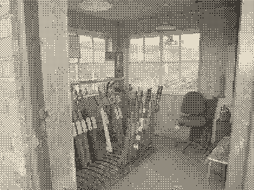
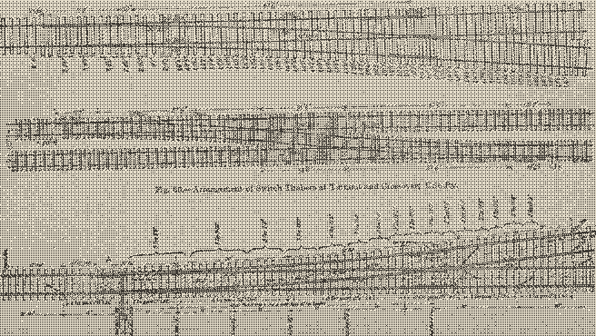
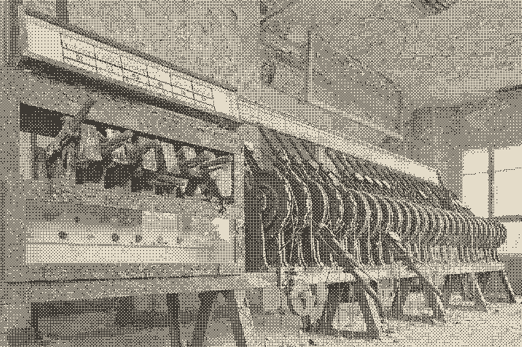

第 7 号道岔未释放之前，任何信号都扳不动。

本时段联锁关系
本时段的锁闭关系尚未登记，值班员 22:40 交班前录入。
空簿不等于无约束：上一时段的 14 枚锁闭条仍按原角度扣在原位，切口和纸色缝隙一枚未动。
| 道岔号 | 锁别号 | 互斥 | 前序锁 |
|---|---|---|---|
锁 1 |
3 |
无 |
|
锁 2 |
3 |
锁 1 |
|
锁 3 |
4 |
锁 2 |
|
| 4 | 未登记 | ／ | ／ |
锁 4 |
2 |
锁 3 |
|
| 6 | 未登记 | ／ | ／ |
锁 5 |
4 |
锁 4 |
|
锁 6 |
3 |
锁 5 |
|
| 9 | 未登记 | ／ | ／ |
锁 7 |
3 |
锁 6 |
|
| 11 | 未登记 | ／ | ／ |
锁 8 |
2 |
锁 7 |
| 信号号 | 锁别号 | 互斥 | 前序锁 |
|---|---|---|---|
锁 9 |
4 |
锁 8 |
|
锁 10 |
3 |
锁 9 |
|
| C | 未登记 | ／ | ／ |
锁 11 |
2 |
锁 10 |
|
锁 12 |
3 |
锁 11 |
|
| F | 未登记 | ／ | ／ |
锁 13 |
4 |
锁 12 |
|
锁 14 |
2 |
锁 13 |
|
| C | 转入登记 | ／ | ／ |
释放路径 · 本时段登记 14 枚锁闭条
条与条之间露出 1 像素纸色缝隙，表示两根杆之间存在物理间隔。把指针压在任一条上，与它互斥的条同时加 1 像素暗边。
联锁表里的三件事都有实物可对：一枚杆号牌、一台保证物理间隔的闭塞器、一张要签字的值班台。三张图版都按同一道工序处理过——先转灰度，再走四乘四阈值抖动，只留主色与纸色两阶，所以它们读起来是刻印而不是照片。



切口角度表
锁闭条右端的斜切角不按外观决定，只按该枚锁的互斥对数分三档。全站共用这一张表：换掉站名，这两组数仍然只属于联锁。
| 斜切角 | 互斥对数 | 本时段锁数 | 切口水平进深 | 适用说明 |
|---|---|---|---|---|
30 度 |
2 对 |
4 枚 |
41.6 像素 |
只与同进路相邻的两根杆互斥，切口最缓。 |
45 度 |
3 对 |
6 枚 |
24.0 像素 |
道岔与信号两组各有一条互斥，切口居中。 |
60 度 |
4 对 |
4 枚 |
13.9 像素 |
进路交叠最多，切口最陡，等于把互斥关系刻在料头上。 |
这一组的两张图都是「把关系压成一张二维东西」的旧做法：一张是 1908 年把岔群压成铺枕平面图，另一张是停用的扳道台上那条进路指示条——分区号并列成一行，锁闭到哪一格就刻到哪一格。


互斥清单
一枚锁的切口角度由它的互斥对数决定，所以清单是可核对的：数出几条，就能拿尺子量出切口该有多陡。
9信号 A与 3 号锁争用同一条进路交叉点12信号 E反向进路，两根杆的锁闭块抢同一个锁槽13信号 G侧向进路经 5 号道岔，与 3 号锁的路由交叠14信号 H与 3 号锁共用同一段钢轨电路区段
3 号锁的切口因此定为 60 度，水平进深 13.9 像素，与上表第四列一致。
登记状态
四种状态各有各的样子：载入时锁块逐枚落入锁槽，停用的号牌压成凹面，故障用断针三角加三位编号标出，空簿仍然留着上一时段的扣接。
-
载入中
锁块正沿锁槽扫到第 7 枚，每枚 70 毫秒，走完 14 枚共 980 毫秒，落地用 steps(1)，不淡入。
-
停用
6 号道岔在检修窗口内，号牌压成凹面，它的互斥关系暂不参与判定，切口角度保留不变。
-
故障
4075 号道岔的锁闭块卡在行程中段，释放路径停在第 5 枚，后面 9 枚一律扣不上，任何信号都扳不动。
-
空簿
把上面的时段切到 05:00，联锁表让位给空状态：锁闭关系尚未登记，14 枚锁闭条仍按原角度扣在原位，没有被撤销。